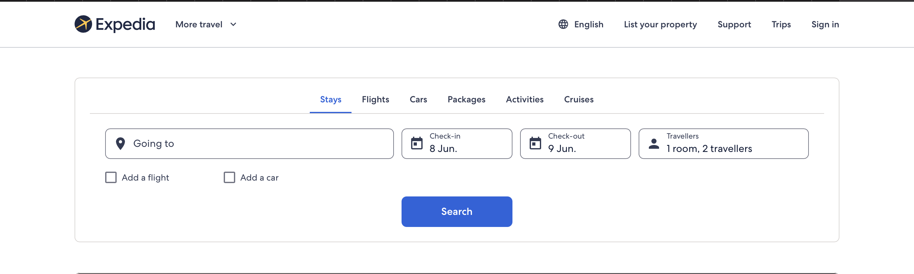
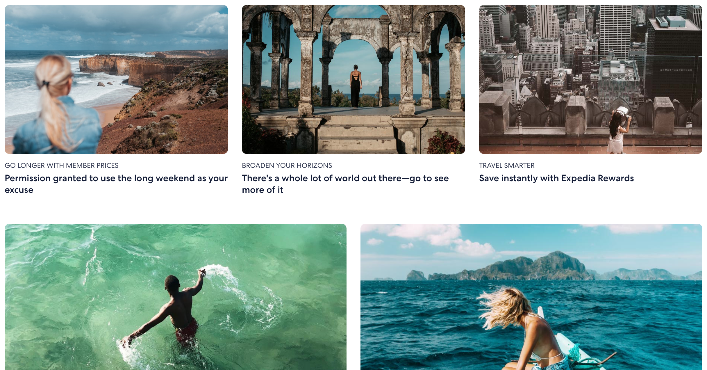

Topic
The app, ‘Anywhere Travels’, will be help people travel, making it a more accessible and easy experience. The app allows users to find a place they would be interested in travelling to by allowing the user to search as well as gibing suggestions based on previous searches, interactions, and trips by the user. This gives potential travellers the ability to find new locations without having to search multiple other places extensively. It could also help increase tourism in lesser-known areas by suggesting places based on other interactions from the user.
The app will allow users to find and compare trips, so they can find their favourite one based on price, amenities, etc. This feature will help make travelling more affordable and will therefore encourage more people to experience it.
The ‘local tips’ portion of the app will allow users to post comments about an area where they have travelled or that they are locals of, making potential travellers able to learn more about a location from visitors and locals. This could alleviate some anxiety felt by travellers about going to a different location, especially if it’s a different culture than what they are used to. It could also help locals by informing tourists about social norms and what they should/shouldn’t do while visiting. This could make locals more comfortable with visitors.
Motivation
Landscape
Programs such as expedia allow users to compare and book flights, accommodations and car rentals as well as showing the user possible travel locations and articles. Websites and apps like this are very similar to our app in the booking and comparing aspect, but the social and personalised components that our app aims to include aren’t part of expedia.
 Powered by w3.css